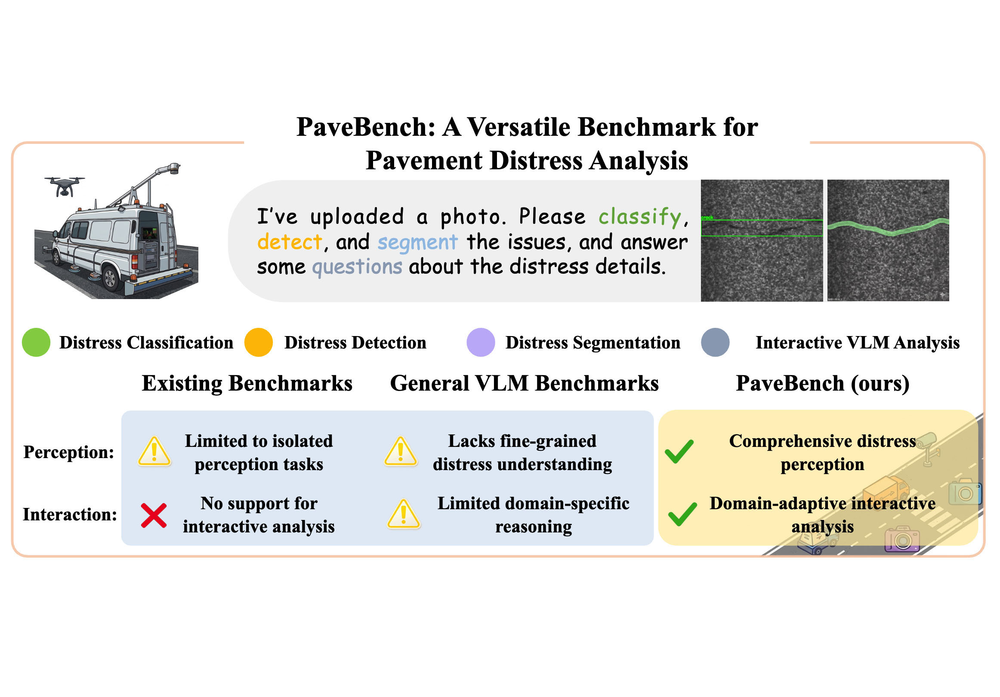
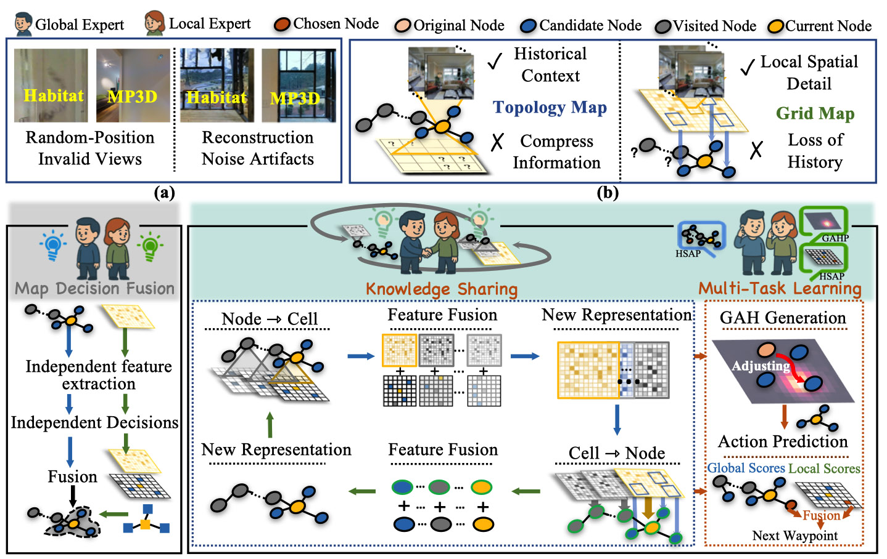
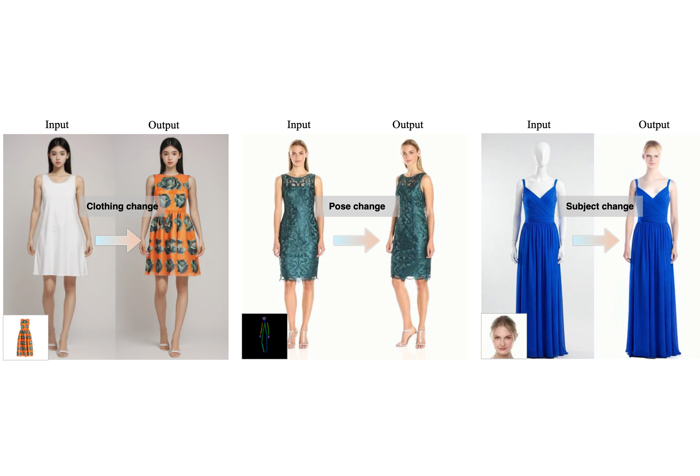

Dexiang Li, Zhenning Che, Haijun Zhang, Dongliang Zhou✉, Zhao Zhang, Yahong Han
arXiv preprint, 2026

Dexiang Li, Zhenning Che, Haijun Zhang, Dongliang Zhou✉, Zhao Zhang, Yahong Han
arXiv preprint, 2026

XLu Yue, Dongliang Zhou, Liang Xie, Erwei Yin, and Feitian Zhang
IEEE Transactions on Multimedia, 2026

Xiangyu Mu, Dongliang Zhou✉, Jie Hou, Haijun Zhang, and Weili Guan
arXiv preprint, 2025
Dongliang Zhou, Yakun Zhang, Jinghan Wu, Xingyu Zhang, Liang Xie, and Erwei Yin
IEEE Transactions on Human-Machine Systems, 2025
Sen Wang†, Dongliang Zhou†,✉, Liang Xie, Chao Xu, Ye Yan, and Erwei Yin
Neural Networks, 2025
Advanced Multimodal Compatibility Modeling and Recommendation
Weili Guan, Xuemeng Song, Dongliang Zhou, and Liqiang Nie
Springer Book, 2025
LipGen: Viseme-Guided Lip Video Generation for Enhancing Visual Speech Recognition
Bowen Hao†, Dongliang Zhou†, Xiaojie Li, Xingyu Zhang, Liang Xie, Jianlong Wu, and Erwei Yin
IEEE International Conference on Acoustics, Speech, and Signal Processing, 2025
Lu Yue, Dongliang Zhou, Liang Xie, Feitian Zhang, Ye Yan, and Erwei Yin
IEEE Robotics and Automation Letters (also presented at IROS 2024 oral), 2024
Minglong Dong†, Dongliang Zhou†, Jianghong Ma, and Haijun Zhang
IEEE International Conference on Acoustics, Speech, and Signal Processing, 2024
Dongliang Zhou, Haijun Zhang, Jianghong Ma, Jicong Fan, and Zhao Zhang
ACM International Conference on Multimedia, 2023
Toward Intelligent Interactive Design: A Generation Framework Based on Cross-domain Fashion Elements
Jianyang Shi, Haijun Zhang, Dongliang Zhou, and Zhao Zhang
ACM International Conference on Multimedia, 2023
BC-GAN: A Generative Adversarial Network for Synthesizing a Batch of Collocated Clothing
Dongliang Zhou, Haijun Zhang, Jianghong Ma, and Jianyang Shi
IEEE Transactions on Circuits and Systems for Video Technology, 2024
Dongliang Zhou, Haijun Zhang, Qun Li, Jianghong Ma, and Xiaofei Xu
IEEE Transactions on Multimedia, 2023
Dongliang Zhou, Haijun Zhang, Kai Yang, Linlin Liu, Han Yan, Xiaofei Xu, Zhao Zhang, and Shuicheng Yan
IEEE Transactions on Neural Networks and Learning Systems, 2024
Han Yan, Haijun Zhang, Linlin Liu, Dongliang Zhou, Xiaofei Xu, Zhao Zhang, and Shuicheng Yan
IEEE Transactions on Multimedia, 2023